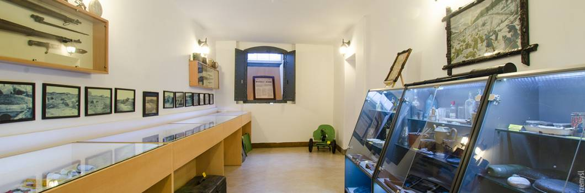

Powrót do strony głównej

W Muzeum zgromadzone są zbiory pochodzące z terenu dawnej Twierdzy Przemyśl z okresu XIX w.,
stanowiące doskonałą lekcję historii dla zwiedzających.
Muzeum Twierdzy Przemyśl powstało z inicjatywy członków Stowarzyszenia 3 Historycznego Galicyjskiego Pułku Artylerii Fortecznej im. Księcia Kinsky’ego.
Siedziba muzeum znajduje się w budynku Cechu Rzemiosł Różnych przy ulicy Katedralnej 6,
drugie wejście prowadzi przez podwórze od ulicy Fredry.Dla zwiedzających przygotowane są 4 sale pełne eksponatów.
Między innymi można zobaczyć broń białą i palną, wyposażenie żołnierzy, stare zdjęcia,
elementy pancernego wyposażenia fortów, pociski i zapalniki artyleryjskie oraz wszelkiego rodzaju przedmioty osobiste i użytkowe.
Przedmioty wielkogabarytowe takie jak pancerna wieża obserwacyjna,
część pancernej wieży bojowej oraz inne części są w filii muzeum mieszczącej się na terenie fortu nr XV Borek w Siedliskach .
Recenzja miejsca